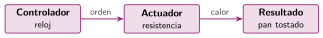
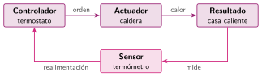

Control en lazo abierto y en lazo cerrado
🤔 Pienso5 min
Qué hago aquí: Piensa un momento y contesta con lo que ya sabes. No pasa nada si no lo sabes: es para empezar.
El pan ya está dorado, pero el tiempo no ha acabado. ¿Qué hace la tostadora? Y si la casa ya está a 21 grados, ¿qué hace la calefacción?
📖 Leo y aprendo15 min
Qué hago aquí: Lee despacio, mira los dibujos y los ejemplos, y quédate con la idea clave del final.
Hay dos tipos de sistemas de control. La diferencia es si comprueban el resultado o no.


| Lazo abierto: no mira | Lazo cerrado: mira y corrige |
|---|---|
| tostadora con temporizador | calefacción con termostato |
| riego a las 8 | cisterna con boya |
| microondas | coche que mantiene la velocidad |
✏️ Hago25 min
Qué hago aquí: Haz las actividades en orden. Empieza siempre por las básicas.
Marca A (abierto) o C (cerrado).
Completa: en un lazo cerrado, un mide el y el sistema .
En el dibujo del lazo cerrado, colorea la flecha de la realimentación.
Dibuja el esquema de un riego en lazo cerrado. ¿Qué mide el sensor?
Escribe una ventaja del lazo cerrado. ¿Por qué crees que la tostadora sigue siendo de lazo abierto?
✏️ Puedes responder escribiendo, con un dibujo o un esquema, o contándolo en voz alta.
🚀 Amplío (si quieres saber más)
Qué hago aquí: ¿Has terminado? Lee la curiosidad o elige el reto. Es voluntario.
Una tostadora «inteligente» quiere dejar el pan siempre igual de dorado. ¿Qué sensor le pondrías? Dibuja su esquema en lazo cerrado.
✅ Compruebo5 min
Qué hago aquí: Contesta sin mirar la ficha y marca cómo lo llevas.